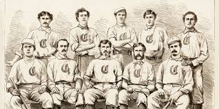
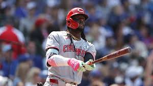

Team Founding and the Early Days
The Cincinnati Redstockings
The Cincinnati Reds were officially founded in 1881 as a member of the American Association. While the official franchise was founded in 1881 the Cincinnati Reds would never have became what the have today without their successor of the Cincinnati Red Stockings.The Red Stockings were founded in 1866 and were the first ever openly all-proffessional baseball team.The Red Stocking would pave the way for what Major League Baseball would eventually become.
While the Cincinnati Red Stockings were founded in 1866 they are most known for their 1869 season. In 1869 the Red Stockings would go undefeated while traveling 12,000 miles across the country, helping popularize the sport. They were also the first team to have most of their players on salaries as all players and proffesional sports would eventually have. The Red Stockings are considered the originators of proffesional baseball and the teams legacy influenced the naming of the Cincinnati Reds and the Boston Red Sox. Major Baseball would never be the same if it were not for the Cincinnati Red Stockings.
Just Getting Started

When the Cincinnati Reds franchise started success would not easy to come by, but it would not be too long until they found it. From 1900-1940 the Reds would win four National League pennants and two World Series. Some of the teams best players in this era included Johhny Vander Meer, Ernie Lombardi, Paul Derringer, Ival Goodman, and Frank McCormick. Johhny Vander Meer is one of the best known Reds at this time as he would throw two straight no-hitters making him still the only pitcher in history to do so.
Massive Impact In Baseball History

While the Reds were not considered a dominant franchise early on things would begin to change. Once the seventy's came the Reds were on their way to the start of a dynasty. From 1970-1990 the Cincinnati Reds would win five National League Pennants and 3 World Series. The Reds success in the 70s and early 80s would lead to the Nickname "The Big Red Machine" which led to growing popularity of the Reds Franchise. The Big Red Machine would have some of the best players in Reds history including the hit king Pete Rose, Johhny Bench, Joe Morgan and Tony Perez. While the Big Red Machine had some of the best Reds of all time the 90s team included hall of famer Barry Larkin, Eric Davis, Chris Sabo and Jose Rijo.
Modern Days
Unfortunately the franchise has not made it to the World Series or even the Nation League championship series since the 1990 season. While success has been hard to come by there have still been good Reds teams since then. In 2000 the Reds would sign star player Ken Griffey Jr. which many fans were excited about. Unfortunately Griffey Jr. would have lots of injury issues in his tenure in Cincinnati and it never led to much success.
In the 2010s the Reds would finally find some success as they would make the NLDS in 2010 and 2012 but their seasons would eventually end in loses. Some of teams best players in this decade would include Joey Votto, Jay Bruce, Brandon Phillips, Todd Frazier, Johhny Cueto, and Aroldis Chapman. The Reds have made the wild card twice since then including last season. The Reds have positive expectations going into this season behind star player Elly De La Cruz and tenured manager Terry Francona.